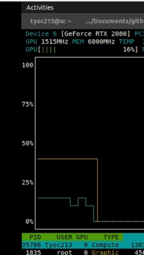

Introduction
Since the time I found some issues mentioning GPU support https://github.com/pytorch/xla/ I was wondering when I could use it locally because a little group at fastai community have been trying to give support to fastai and hopefully being able to run locally would be useful for that end.
Running GPU support with a docker image
So the first thing was to run it with the docker image which if you have installed container-toolkit/install-guide and then running something like docker run --gpus all -it --shm-size 16G gcr.io/tpu-pytorch/xla@sha256:efe47b7a3875ddfa3ea9c68a12ed5517c19cbb3cf272776fba64bec8a683299f or the sha or nightly you want to run like gcr.io/tpu-pytorch/xla@nightly.
After I ran that, I compiled the source as xla-instructions inside that image and after some hours I could see a “hello” I have made on a cpp file wonderful!!!. But it seems that all that work would be lost on the next startup, so after watch building it and ran successfully I decided to give a go into building on my own computer (if you still need that then maybe check docker commit xxxxx and docker checkpoint).
Compiling locally
To compile locally I have lurked and tested different ways, first time I build it was just with CPU support which I didn’t notice (some env vars where missing), so long history short I have made a new environment with conda like conda create -n xla python=3.6 and worked inside this env.
Installing needed things
Probably I miss something, but I have to install
- Don’t use the cuda from apt, use directly from nvidia and install only sdk with
sudo sh PATH_CUDA_DRIVERS --silent --toolkitit will be installed to/usr/local/cudawhich is where it should be located (if you let Ubuntu handle installation of drivers this--toolkitwill not erase that and only install sdk so when updating kernel no need to reinstall). - Install cuddn from NVIDIA from zip file and copy all h files and libs
sudo cp cuda/include/cudnn.h /usr/local/cuda/include
sudo cp cuda/include/cudnn.h /usr/local/cuda/include
sudo cp cuda/lib64/libcudnn* /usr/local/cuda/lib64
sudo cp cuda/include/cudnn_version.h /usr/local/cuda/include
sudo cp cuda/include/cudnn_backend.h /usr/local/cuda/include
sudo cp cuda/include/cudnn_adv_infer.h /usr/local/cuda/include
sudo cp cuda/include/cudnn_adv_train.h /usr/local/cuda/include
sudo cp cuda/include/cudnn_cnn_infer.h /usr/local/cuda/include
sudo cp cuda/include/cudnn_cnn_train.h /usr/local/cuda/include
sudo cp cuda/include/cudnn_ops_infer.h /usr/local/cuda/include
sudo cp cuda/include/cudnn_ops_train.h /usr/local/cuda/include
sudo cp cuda/include/cudnn.h /usr/local/cuda/include- Install
sudo apt-get install cmake - Install go to install
go get github.com/bazelbuild/bazeliskand then make if you cant runbazelfrom command line make aln -s /home/tyoc213/go/bin/bazelisk /home/tyoc213/go/bin/bazelbecause bazel is needed in the path. sudo apt-get install clang-8 clang++-8pip install lark-parserconda install -c pytorch magma-cuda110In my case I haveCUDA Version: 11.0so I used110
Get the sources
git clone --recursive https://github.com/pytorch/pytorch
cd pytorch/
git clone --recursive https://github.com/pytorch/xla.git
cd xla
xla/scripts/apply_patches.shThe last lines apply xla needed patches. Now you are ready to compile, but wait!!! what is missing is all the configuration that lets you build inside the docker container!
Environment vars
Which are the things I fighted most:
export CMAKE_PREFIX_PATH=${CONDA_PREFIX:-"$(dirname $(which conda))/../"}
export TF_CUDA_COMPUTE_CAPABILITIES="7.0,7.5"
export CXX_ABI=0
export cxx_abi=0
export GPU_NUM_DEVICES=1
export cuda=1 # new
export USE_CUDA=1
export XLA_CUDA=1
export XLA_DEBUG=1
export XLA_BAZEL_VERBOSE=0
export CXX=clang++-8
export CC=clang-8
export GLIBCXX_USE_CXX11_ABI=0
export CFLAGS="${CFLAGS} -D_GLIBCXX_USE_CXX11_ABI=0"
export CXXFLAGS="${CXXFLAGS} -D_GLIBCXX_USE_CXX11_ABI=0"
export PATH=/usr/local/bin:/usr/sbin:/usr/bin:/sbin:/bin:/usr/local/go/bin:/home/tyoc213/go/bin:/home/tyoc213/miniconda3/envs/xla/include:$PATHProbably some of them are not needed, but this worked out. Also this is not all that is needed, there is one extra set of commands needed because if not the lib will mix CXX11_ABI so it will not link (and you will not know after hours). To apply this inside the pytorch directory:
sed -i '/include(CMakeDependentOption)/i set(GLIBCXX_USE_CXX11_ABI 0)' CMakeLists.txt
sed -i 's/set(CMAKE_CXX_FLAGS "${CMAKE_CXX_FLAGS} -std=c++11 -fPIC")/set(CMAKE_CXX_FLAGS "${CMAKE_CXX_FLAGS} -std=c++11 -fPIC -D_GLIBCXX_USE_CXX11_ABI=0")/g' third_party/gloo/CMakeLists.txt
sed -i '/gloo_list_append_if_unique(CUDA_NVCC_FLAGS "-Xcompiler" "-fPIC")/i gloo_list_append_if_unique(CUDA_NVCC_FLAGS "-Xcompiler" "-D_GLIBCXX_USE_CXX11_ABI=0")' third_party/gloo/cmake/Cuda.cmake
Building
So that is all needed if I didn’t miss something. So now we are ready to build this this, start at the top level pytorch:
(xla) tyoc213@u:~/Documents/github/pytorch$ python setup.py install
(xla) tyoc213@u:~/Documents/github/pytorch$ cd xla
(xla) tyoc213@u:~/Documents/github/pytorch/xla$ python setup.py installIn my 2015 CPU Intel(R) Core(TM) i5-6500 CPU @ 3.20GHz it taked like 2-4 hours compiling pytorch and then 8-10 hours compiling xla (which compiles internally TF).
Finally running
SO now that you have a working xla locally, you need to setup some extra vars to configure XLA for 1 GPU
export XRT_WORKERS="localservice:0;grpc://localhost:40934"
export XRT_DEVICE_MAP="CPU:0;/job:localservice/replica:0/task:0/device:XLA_CPU:0|GPU:0;/job:localservice/replica:0/task:0/device:XLA_GPU:0"If you have 4 GPUs, then use export XRT_DEVICE_MAP="CPU:0;/job:localservice/replica:0/task:0/device:XLA_CPU:0|GPU:0;/job:localservice/replica:0/task:0/device:XLA_GPU:0|GPU:1;/job:localservice/replica:0/task:0/device:XLA_GPU:1|GPU:2;/job:localservice/replica:0/task:0/device:XLA_GPU:2|GPU:3;/job:localservice/replica:0/task:0/device:XLA_GPU:3"
Why All this?
Having xla TPU support is still a missing and wanted feature of fastai, some months a go Butch Landingin and I joined a hackathon to have a little reusable library it worked as a POC and in some moments we did have something working prior fastai 2 release but later we have found “extrange quirks” that have been difficult to track. And lately we have joined forces with Tanishq Mathew Abraham who has been working in his own support for fastai, so hopefully this time we can make this work.
This was the first capture on Nov 26, see how the name says “compute” while on a 2080 
The good parts
the * It also means that we can have XLA tests running without TPU on a GPU and you don’t need to compile, only get latest build and run on docker GPU, or locally with full compiling as explained above. * XLA GPU optimizations could maybe help your current work? and maybe some things can be tested locally before running full production on the cloud. * The operations sended back to run on CPU locally feel not much slow as they are on TPUs just saying that maybe is more expensive to send ops to CPU on TPU that locally, but havent made a lot of tests and this should be only until all the ops are lowered to TPU. * Have all locally allows to change things like you want, for example I can see the slowness of TPU operations inside the fastai loop with chrome://tracing/ modyfing learner and running the XLA-GPU. And have already found a issue haven’t noticed in latest commits.
The bad parts
- I have been only able to step/debug on python code, not on CPP (but hopefully someone that read this knows a tip to check my vscode settings).
- maybe I forgot something more specific in these instructions, but if you find an error, please share.
References
- First hint that xla run on GPU GPU support in PyTorch XLA
- This week I spammed the guys at xla Running locally which foes first into running with docker, then locally.
- The last missing part, the sed error when building pytorch 1.1.0 from source
- Most of the build steps are on xla/CONTRIBUTING